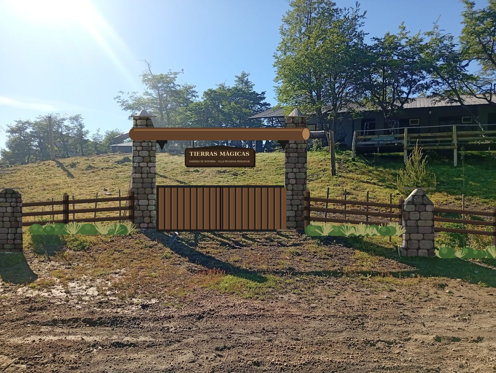
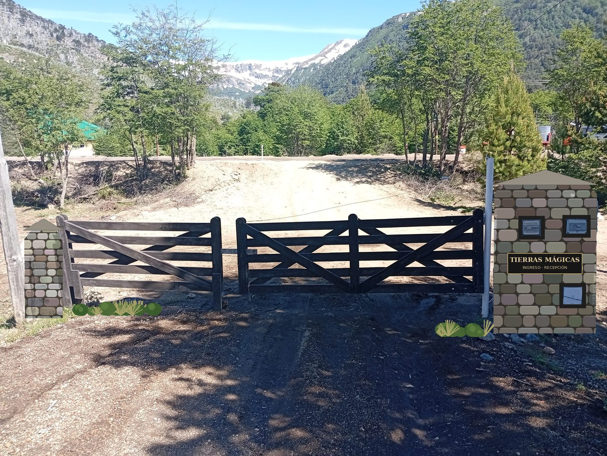

PLC-07 · Proyecto ejecutivo · 28/11/2026 · Tierras Mágicas, RP 11 Km 8,2, Villa Pehuenia Moquehue
Acceso Tierras Mágicas: refugio de piedra
Proyecto ejecutivo de la opción 3 elegida por el dueño, con la tabla tallada colgante de las opciones 1 y 2 en lugar del panel del logo. Cubre todo el frente de punta a punta: cerca, portal peatonal, acceso vehicular y paisajismo.
DecisiónOpción 3 «Refugio de piedra» con la tabla tallada
Frente59,54 m · 9 mojones cada 6 m · portal de 3,80 m · tranquera de 5,50 m
Plantas211 nativas de 12 especies, en 7 zonas
ObraDiciembre a abril, en 6 etapas (E0 a E5)
01Memoria descriptiva
El frente se ordena con tres materiales: piedra local en todo lo que marca un ingreso, madera oscura en la cerca y los portones y metal negro en herrajes y ménsulas. La piedra se concentra en los dos accesos: en los pilares del portal, en los 4 mojones que los flanquean (M0, M1, M3 y M4) y en el pilar de medidores. Así, desde la ruta se leen dos puntos fuertes unidos por una cerca continua y sobria. Los otros 5 mojones se pintan en gris piedra para que acompañen sin competir.
Cerca: 7 tramos de 6 m entre mojones, con postes escuadrados de 5"×5" con punta de diamante, que repiten la forma de los mojones, y 3 travesaños pasantes de 18', todo en madera oscura. Mide 1,15 m de alto libre. Se retira el alambrado.
Portal peatonal: retirado 1,50 m, con un atrio de lajas entre dos pircas bajas de piedra seca. Pilares revestidos de 3,40 m, viga nueva de rollizo con ménsulas negras y la tabla tallada «Tierras Mágicas · Cabañas de montaña · Villa Pehuenia Moquehue» colgada. Del lado de adentro dice «Buen viaje». El portón es nuevo, metálico con tablas verticales.
Acceso vehicular: pilar de medidores revestido en piedra, con las cajas libres y enmarcadas, y la placa «Ingreso · Recepción». La tranquera se restaura con herrajes negros. El cerco del camino interno (≈ 50 m) pasa a tener postes de 5"×5" y 2 travesaños.
Paisajismo: solo especies nativas de la cordillera, en franjas bajas del lado de adentro de la cerca. Las flores se concentran en el portal y el sendero, la pantalla vegetal va frente a la tina y una araucaria marca el final del sendero. La banquina queda libre.
Luz: solar, cálida y dirigida hacia abajo, en el cartel, los pilares, las pircas, la placa y el sendero.
La constructora vial hace la cuneta, la alcantarilla y el relleno de la banquina. Si la cuneta impide el paso frente al portal, el portal queda cerrado como portada y se entra a pie por la tranquera. En ese caso se descuentan el sendero, las balizas y el atrio, y el resto del proyecto no cambia.
02Imagen final

Portal peatonal desde la ruta (fotomontaje ilustrativo sobre F07).

Acceso vehicular visto desde adentro: pilar de medidores revestido, cajas enmarcadas y placa (fotomontaje sobre I02).
03Planos generales
Elevación completa desde la ruta, de M0 a M8
Planta completa del frente
04Paisajismo
Criterio: plantas nativas de la cordillera, de bajo mantenimiento, en grupos irregulares y nunca en fila. Lo alto va contra la cerca y lo bajo hacia el interior. Nada tapa los mojones, los pilares ni la vista desde la ruta. En los triángulos de visibilidad de la tranquera nada supera los 0,6 m. La banquina queda sin plantas. Las flores se concentran donde se camina (portal y sendero), y el coirón y la chaura sostienen la imagen en invierno.
Plano general de zonas
Módulos de plantación tipo (por tramo de 6 m)
Zonas y cantidades
Zona
Ubicación
Superficie
Plantas
Total
Z1
Faja del frente, módulo B (5 tramos: M2-M3, M4-M5, M5-M6, M6-M7, M7-M8)
1,2 × 5,55 m por tramo
CO 25 · CH 15 · AM 30 · CA 5 · SC 5
80
Z2
Faja del frente junto a la tranquera, módulo A bajo (M0-medidores y M1-M2)
1,2 × 5,5 m por tramo
CO 10 · CH 8 · FR 12 · AM 6
36
Z3
Pircas y pilares del portal (lado de adentro)
≈ 8 m²
CI 2 · MU 2 · FR 10 · AM 6
20
Z4
Lado de adentro del acceso vehicular y pilar de medidores
≈ 6 m²
CO 6 · FR 10
16
Z5
Bordes del sendero peatonal (≈ 30 m)
0,5 m por lado
CH 10 · AM 10 · FR 20 · AR 1
41
Z6
Pantalla vegetal de la tina (≈ 12 m)
1,5 m de ancho
MI 4 · NO 2 · SC 3 · PP 3
12
Z7
Cerco del camino interno (≈ 50 m)
puntual
CA 6
6
Total de plantas
211
Especies
Código
Especie
Tipo
Altura
Flor
Envase
Distancia
Cant.
Uso y notas
CO
Coirón blanco Festuca pallescens
Gramínea perenne
0,3-0,5 m
—
1 L
0,5 m
41
Base de todos los canteros. Rústica, sin riego después del 2.º año.
CH
Chaura Gaultheria mucronata
Arbusto bajo perenne
0,3-0,6 m
Blanca, primavera
1-3 L
0,6 m
33
Verde todo el año; aguanta media sombra.
AM
Amancay Alstroemeria aurea
Herbácea perenne con bulbo
0,4-0,8 m
Naranja y amarilla, dic-feb
1 L
0,4 m (grupos de 3)
52
Flor emblema de la zona. Desaparece en invierno y rebrota. Reemplaza al lupino.
FR
Frutilla silvestre Fragaria chiloensis
Cubresuelo rastrero
0,1-0,2 m
Blanca, primavera
maceta 0,5 L
0,3 m
52
Cubre el suelo y frena la erosión. Solo donde no se pisa. Confirmar procedencia andina.
CA
Calafate Berberis microphylla
Arbusto espinoso
0,8-1,2 m
Amarilla, oct-nov
3 L
1,2 m
11
Contra la cerca, del lado de adentro. Espinoso: lejos de sendero y atrio.
SC
Siete camisas Escallonia virgata
Arbusto caducifolio
0,8-1,5 m
Blanca, dic-ene
3 L
1,2 m
8
Aporta color otoñal junto a los ñires.
CI
Chilco Fuchsia magellanica
Arbusto de flor
0,8-1,5 m
Roja y violeta, dic-mar
3 L
1,0 m
2
Necesita humedad: solo con goteo. Del lado de adentro de los pilares del portal.
MU
Mutisia Mutisia spinosa
Trepadora
apoyada 1-2 m
Rosada a naranja, verano
3 L
1 por pirca
2
Se apoya en la pirca. Confirmar disponibilidad en el vivero.
MI
Michay Berberis darwinii
Arbusto perenne
1,0-2,0 m
Naranja, oct-nov
3-5 L
1,2 m
4
Pantalla de la tina.
NO
Notro Embothrium coccineum
Arbusto o arbolito
2-4 m
Roja intensa, nov-dic
3-5 L
2,5 m
2
Solo en la pantalla de la tina, lejos de la cerca.
PP
Palo piche Fabiana imbricata
Arbusto
0,8-1,5 m
Blanca a lila, nov-dic
3 L
1,2 m
3
Tolera suelo pobre y seco.
AR
Araucaria (pehuén) Araucaria araucana
Árbol emblema
lento, 10-20 cm por año
—
ejemplar de vivero
ejemplar aislado
1
Hito al final del sendero, a más de 4 m de construcciones y cables. Solo de vivero autorizado.
Todas son nativas de los bosques andino-patagónicos. Antes de comprar, el vivero de nativas de la zona (Villa Pehuenia, Aluminé, Junín de los Andes o San Martín de los Andes) tiene que confirmar la especie, la procedencia andina y que se adapten a la altura de Moquehue. Esto vale sobre todo para la frutilla silvestre y la mutisia. Nunca hay que extraer plantas del bosque: la araucaria, en particular, solo se compra en un vivero autorizado.
Cómo se ve en cada estación
Primavera (sep-nov) Calafate en amarillo y michay en naranja; notro en rojo intenso en la pantalla de la tina; frutilla silvestre en flor blanca; rebrotan amancay y chilco.
Verano (dic-feb) El amancay naranja es la estrella del frente; chilco en rojo y violeta junto al portal; mutisia sobre las pircas; siete camisas y palo piche en blanco.
Otoño (mar-may) Ñires en rojo de fondo; siete camisas con hoja rojiza; coirón dorado; bayas rosadas y blancas de la chaura.
Invierno (jun-ago) La piedra y la madera oscura sostienen la identidad; quedan verdes la chaura, el calafate y el michay; el coirón asoma sobre la nieve. Las flores descansan.
Plantación, riego y mantenimiento
Época: plantación principal en otoño (marzo-abril), antes de las heladas fuertes. La araucaria, el notro y el chilco, en otoño o a fines de septiembre.
Preparación: descompactar 30 cm. Hoyos del doble del envase, con tierra fértil mezclada 1:1 con la del lugar. Piedras del predio semienterradas entre los grupos.
Cobertura: 5 cm de chip de corteza o de grava del lugar en todos los canteros, para frenar malezas y erosión y proteger del frío.
Riego: se amplía el goteo existente (≈ 150 m de manguera con goteros autocompensados). Los 2 primeros veranos, 2 o 3 riegos por semana. Desde el tercer año, solo el chilco y la pantalla de la tina. Vaciar la red antes del invierno.
Mantenimiento anual: en primavera, desmalezar y reponer la cobertura. En otoño, cortar las varas secas del amancay y peinar el coirón. No hace falta podar, salvo para despejar mojones, pilares y la tranquera.
Exóticas (a decidir por el dueño): retirar los pinos jóvenes que estén a menos de 3 m de la cerca o que vayan a tapar la vista. No ampliar los lupinos y reemplazarlos de a poco por amancay, porque ambas exóticas se consideran invasoras en la zona. El romero existente se mantiene. No sumar enebros ni coníferas junto al portal ni junto a los tanques de gas.
05Detalles constructivos
Antes de construir, un profesional tiene que verificar: la sección y el anclaje de la viga con el cartel (viento y nieve), el estado del núcleo y la fundación de los pilares del portal antes de sumarles el peso de la piedra, y el anclaje de las bisagras del portón nuevo. Los detalles fijan el criterio y las medidas de proyecto, no reemplazan ese cálculo.
D1 · Pilar del portal revestido en piedra (corte)D2 · Mojones: revestidos (flanquean los accesos) y pintados (resto)D3 · Pilar de medidores revestido (cara exterior; la interior igual)D4 · Pirca de piedra seca en las alas del atrio (corte)D5 · Cerca de postes escuadrados, tramo tipo de 6 m (vista)D6 · Viga nueva, ménsulas y tabla tallada (vista desde la ruta)D7 · Portón peatonal nuevo (vista)D8 · Atrio de lajas y sendero peatonal (cortes)D9 · Iluminación solar del cartel (esquema)
06Especificaciones técnicas
Piedra
Piedra local de una sola cantera para revestimientos, pircas y lajas, de color gris cálido sin vetas blancas fuertes. Antes de comprar el total, armar una muestra de 50 × 50 cm sobre M3.
Revestimiento en lajas de 6 a 8 cm, asentadas en mortero 1:3 de cemento y arena con hidrófugo, con grapas de acero inoxidable cada 40 cm en altura y juntas rehundidas de 1 cm. Las piedras no deben formar cornisas donde se junte nieve.
Remates en punta de mortero gris, con pendiente de 45° o más, para que la nieve no se acumule.
Trabajar con más de 5 °C y sin pronóstico de helada en las 48 horas siguientes.
Madera
Postes y travesaños de ciprés de la cordillera (con guía forestal), eucalipto colorado o pino impregnado CCA. La parte enterrada tiene que ser durable o impregnada.
Pedir las cajas y las puntas hechas en el aserradero. Cortar las puntas antes de impregnar y sellar todas las cabezas.
Impregnante oscuro (nogal oscuro o ébano) con filtro UV, en 3 manos. Repaso cada 2 o 3 años. Debe ser del mismo tono que la tranquera y el portón.
Viga: rollizo seco de Ø 25-30 cm × 6,00 m, descortezado, sin pudrición ni grietas pasantes, impregnado. Apoyos con membrana bajo la madera.
Metal
Portón, ménsulas y botaguas de acero galvanizado en caliente o con antióxido epoxi, terminados en esmalte negro mate. Tornillería galvanizada o inoxidable.
Todos los anclajes van al núcleo de los pilares y nunca a la piedra del revestimiento.
Iluminación solar
Equipos con panel separado, 2700-3000 K, IP65 o más y batería apta para cargar con baja temperatura, con autonomía de 3 noches o más. Pedir la ficha técnica.
Toda la luz hacia abajo. Encendido crepuscular y 30 % de potencia después de las 00:30. Reemplazar las luces solares existentes de luz fría.
Señalética
Tabla de madera dura (o multilaminado fenólico enchapado) de 2,0 × 0,5 m y 2" de espesor. Letras talladas o en relieve, en color crema. Texto exterior: «TIERRAS MÁGICAS · Cabañas de montaña · Villa Pehuenia Moquehue». Texto interior: «BUEN VIAJE · Gracias por elegir Tierras Mágicas». Botaguas de chapa negra.
Placa del pilar de medidores en metal negro de 40 × 11 cm, con letras crema y la misma tipografía que la tabla.
07Cómputo y lista de compras
Las cantidades salen de las medidas del croquis del dueño y del plano municipal. La planilla lista_compras_proyecto_ejecutivo.xlsx tiene columnas para el precio y el proveedor y calcula el total con 10 % de imprevistos. No se cargan precios: van los de las cotizaciones.
Rubro
Ítem
Unid.
Cant.
Origen
Proveedor
Trabajos previos
Retiro de la viga podrida, ladrillos, alambrado y cerco de soga; limpieza
gl
1
Mano de obra propia
—
Trabajos previos
Replanteo de la línea de cerca, mojones, portal, atrio y sendero
gl
1
Propio + estacas e hilo
—
Piedra
Piedra local en lajas 6-8 cm para revestimiento (pilares, 4 mojones, medidores) + 10 %
m²
29,7
Nuevo
Cantera / corralón
Piedra
Piedra para pircas secas (2 alas de 2,5 × 0,60 × 0,40 m), incluye remate
m³
1,3
Nuevo o del predio
Cantera
Piedra
Lajas para atrio 3-5 cm + 10 %
m²
11
Nuevo
Cantera
Piedra
Mano de obra de pircador: revestimientos, pircas, atrio
jornal
18
Contratada
Pircador
Albañilería
Cemento, arena, hidrófugo para asiento de piedra y remates
gl
1
Nuevo
Corralón
Albañilería
Grapas de acero inoxidable + ancla química
u
160
Nuevo
Ferretería
Albañilería
Pintura mineral gris piedra para 5 mojones (2 manos)
m²
13,5
Nuevo
Pinturería
Portal
Rollizo Ø 25-30 cm × 6,00 m, seco, descortezado e impregnado
Restauración de la tranquera: lijado, herrajes negros, impregnante
gl
1
Reutilizado
Propio
Sendero
Ripio fino para sendero (36 m² × 10 cm)
m³
3,6
Nuevo
Corralón
Sendero
Geotextil
m²
40
Nuevo
Corralón
Sendero
Rollizo Ø 10 para borde (ambos lados)
m
60
Nuevo o rollizos del predio
Aserradero
Sendero
Ripio y arena para base del atrio (10 m² × 15 cm)
m³
1,5
Nuevo
Corralón
Iluminación
Proyector solar con panel separado (cartel)
u
2
Nuevo
Iluminación
Iluminación
Aplique solar hacia abajo, panel separado (pilares)
u
2
Nuevo
Iluminación
Iluminación
Luz solar baja (pircas y placa de medidores)
u
3
Nuevo
Iluminación
Iluminación
Balizas solares para sendero
u
8
Nuevo
Iluminación
Paisajismo
Chip de corteza o grava local, cobertura de 5 cm
m³
5
Nuevo o del predio
Vivero / corralón
Paisajismo
Ampliación de riego por goteo: manguera 16 mm con goteros autocompensados
m
150
Nuevo
Riego
Paisajismo
Tierra fértil para hoyos de plantación
m³
2
Nuevo
Vivero
Plantas
Coirón blanco (Festuca pallescens), 1 L
u
41
Nuevo
Vivero de nativas
Plantas
Chaura (Gaultheria mucronata), 1-3 L
u
33
Nuevo
Vivero de nativas
Plantas
Amancay (Alstroemeria aurea), 1 L
u
52
Nuevo
Vivero de nativas
Plantas
Frutilla silvestre (Fragaria chiloensis), maceta 0,5 L
u
52
Nuevo
Vivero de nativas
Plantas
Calafate (Berberis microphylla), 3 L
u
11
Nuevo
Vivero de nativas
Plantas
Siete camisas (Escallonia virgata), 3 L
u
8
Nuevo
Vivero de nativas
Plantas
Chilco (Fuchsia magellanica), 3 L
u
2
Nuevo
Vivero de nativas
Plantas
Mutisia (Mutisia spinosa), 3 L
u
2
Nuevo
Vivero de nativas
Plantas
Michay (Berberis darwinii), 3-5 L
u
4
Nuevo
Vivero de nativas
Plantas
Notro (Embothrium coccineum), 3-5 L
u
2
Nuevo
Vivero de nativas
Plantas
Palo piche (Fabiana imbricata), 3 L
u
3
Nuevo
Vivero de nativas
Plantas
Araucaria (pehuén) (Araucaria araucana), ejemplar de vivero
u
1
Nuevo
Vivero de nativas
Quién ejecuta
Trabajo
Mano de obra propia
Requiere
Limpieza, retiros, replanteo
Propio
—
Pintura de mojones, restauración de tranquera, impregnante
Propio
—
Cerca y cerco interno
Propio con ayudante
Carpintero solo si las cajas no vienen hechas del aserradero
Sendero, balizas, luces solares
Propio
—
Plantación y riego
Propio
Vivero de nativas: elección final y estado de las plantas
Revestimientos de piedra, pircas, atrio
No
Pircador o albañil con experiencia en piedra
Portón peatonal nuevo, ménsulas
No
Herrero (y carpintero para las tablas)
Viga nueva y cartel
Montaje con ayuda (≈ 200-300 kg)
Verificación de arquitecto o ingeniero
Electricidad (solo plan B a 12 V)
No
Electricista matriculado
08Plan de obra
E0 · Diciembre, semanas 1 y 2: replanteo con estacas e hilo, verificación estructural, muestra de piedra en M3, cotizaciones y compras. Gate: no se empieza la obra sin la verificación de la viga y sin el acuerdo con la constructora vial.
E1 · Antes de la temporada alta: la viga nueva y la tabla primero, por seguridad e imagen. Después, la pintura de los mojones y la restauración de la tranquera.
E2 · Enero y febrero: piedra en pilares, mojones y medidores; pircas y atrio. Trabajar en días de semana y tener un paso alternativo por la tranquera.
E3 · Febrero y marzo: la cerca del frente, el cerco interno, el portón nuevo, el sendero y las luces.
E4 · Marzo y abril: paisajismo completo y riego.
E5 · Fin de abril y después del primer invierno: controlar las luces, reponer plantas y retocar el impregnante.
09Verificaciones y riesgos
Tema
Qué hacer
Cuándo
Viga, anclajes y cartel
Cálculo o verificación de un profesional: sección del rollizo, varillas y riendas
E0
Pilares del portal
Revisar el núcleo y la fundación al retirar la viga, antes de revestir (la piedra suma ≈ 400 kg por pilar)
E1
Cuneta frente al portal
Confirmar con la constructora el paso peatonal; si no hay paso, se aplica la variante sin atrio ni sendero
E0
Piedra
Muestra de 50 × 50 cm aprobada por el dueño antes de comprar el total
E0
Especies
Confirmación del vivero de nativas (procedencia y disponibilidad)
E0-E3
Tanques de gas
Sin luces, cables ni coníferas junto a los tanques; respetar las distancias que indique el gasista
E3-E4
Luces solares en invierno
Medir el primer invierno; si no alcanza, el cartel pasa a 12 V (plan B)
E5
Agua de la ruta nueva (+0,50 m)
Verificar al terminar la obra vial que el agua vaya a la cuneta y no hacia el atrio ni la tranquera
Final de la obra vial
10Pedido de cotización por proveedor
Pedir 3 cotizaciones por proveedor, con fecha, plazo de entrega y forma de pago, y cargarlas en la planilla.
Cantera / corralón
Piedra local en lajas 6-8 cm para revestimiento (pilares, 4 mojones, medidores) + 10 %: 29,7 m²
Cantera
Piedra para pircas secas (2 alas de 2,5 × 0,60 × 0,40 m), incluye remate: 1,3 m³
Lajas para atrio 3-5 cm + 10 %: 11 m²
Pircador
Mano de obra de pircador: revestimientos, pircas, atrio: 18 jornal
Corralón
Cemento, arena, hidrófugo para asiento de piedra y remates: 1 gl
Ripio para apisonar postes: 2 m³
Ripio fino para sendero (36 m² × 10 cm): 3,6 m³
Geotextil: 40 m²
Ripio y arena para base del atrio (10 m² × 15 cm): 1,5 m³